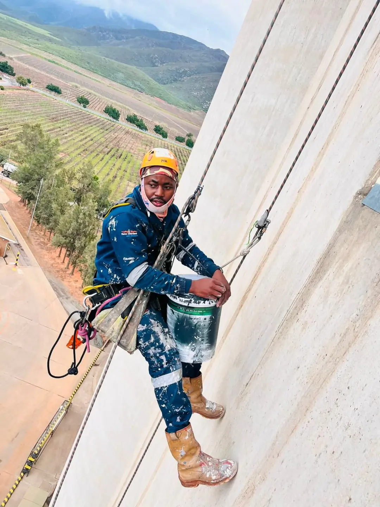
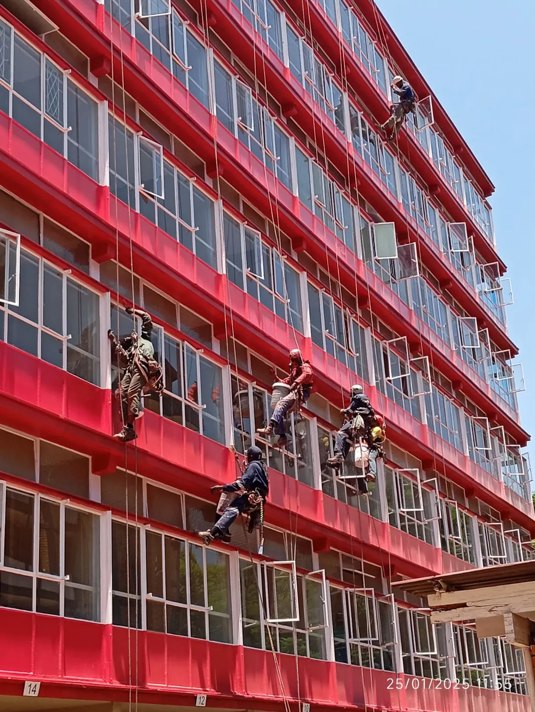
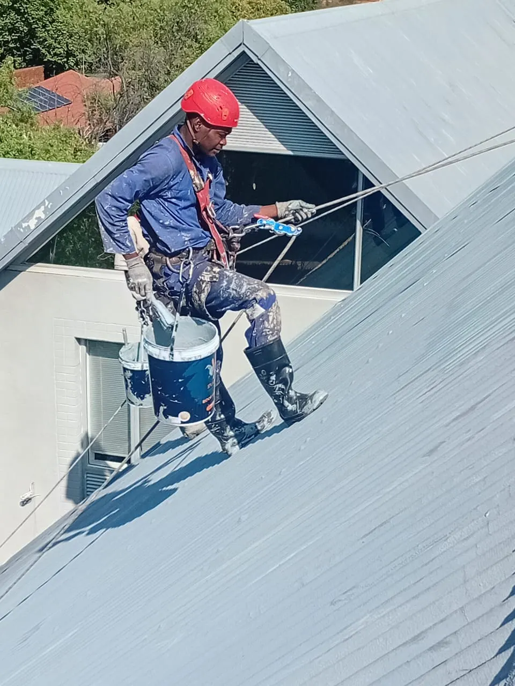
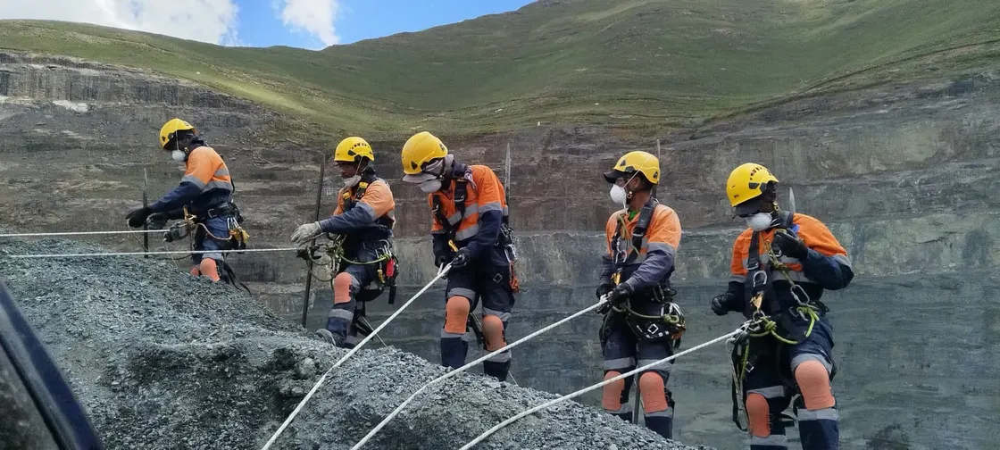
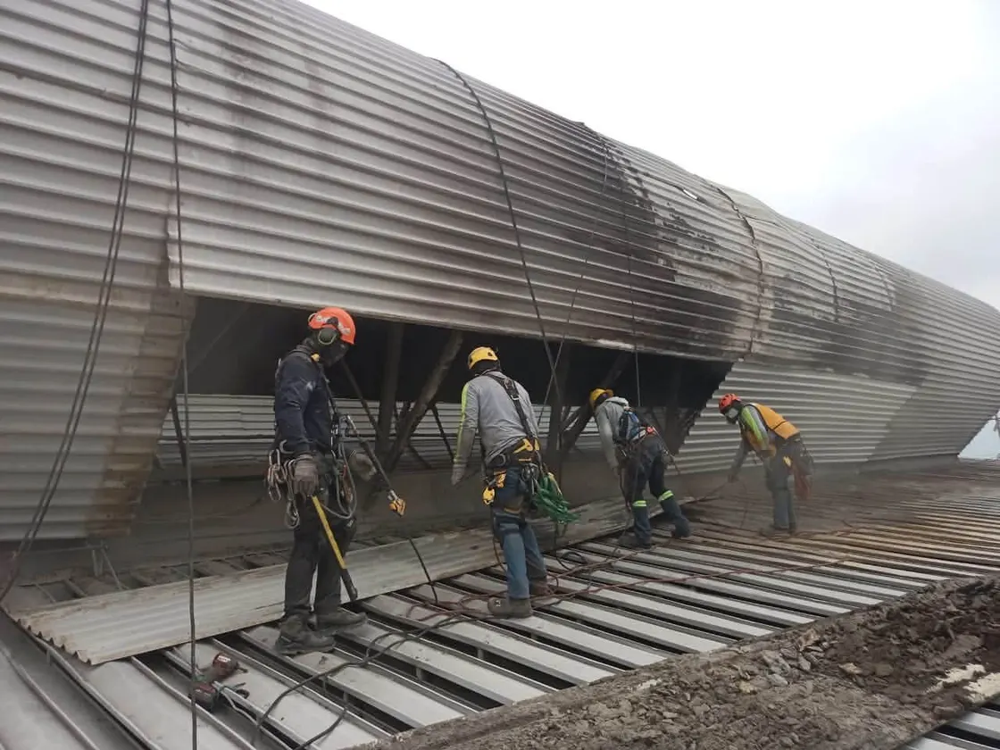

Where we can help
Our nine services span three practical groups.




Rope access for building maintenance, painting, waterproofing and industrial work at height.

Our nine services span three practical groups.
Share the site, the service and the work you need done. We’ll help you work out the next step.
Review your message, then confirm sending it in WhatsApp.